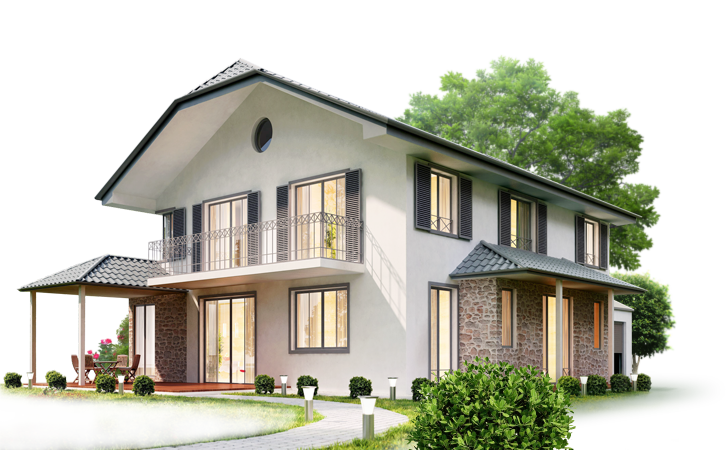
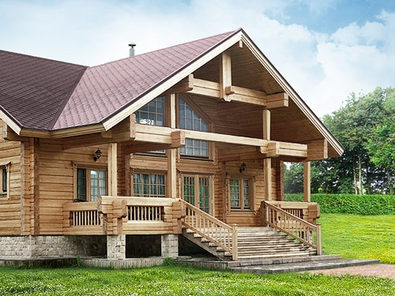

Калуга Сруб · Калуга
Деревянные дома и срубы
Строим деревянные дома. Выберите архитектуру и обсудите размеры, материал и нужную комплектацию.
Посмотреть домаПРИМЕРЫ РЕШЕНИЙ
От проекта к деревянному дому
Сравните разные фасады, террасы и этажность. Обсудим выбор проекта под ваш участок и состав работ.

Деревянный дом с балконом
Калуга Сруб · Калуга
Деревянный дом с балконом
Сравните разные фасады, террасы и этажность. Обсудим выбор проекта под ваш участок и состав работ.
Обсудить строительство